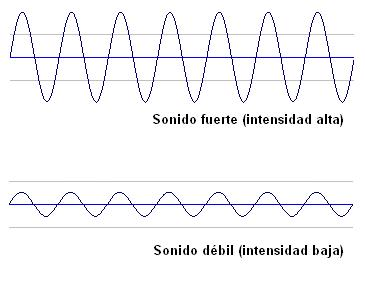
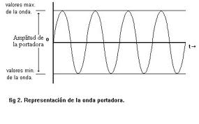

2.2. Intensidad y amplitud
Intensidad y amplitud: la amplitud es la diferencia entre las presiones máxima y mínima que la onda puede alcanzar y la intensidad depende del cuadrado de la amplitud. Podemos asociarlas al volumen del sonido, por lo que mientras mayor sea la amplitud de la onda, mayor será el volumen y viceversa. Para indicar el nivel de intensidad se utiliza una escala logarítmica que se mide en decibelios (dB). 0 dB corresponde al umbral de audición, por debajo de este valor tenemos el auténtico silencio. Por encima de 130 dB se produce una sensación dolorosa.

Nivel de Intensidad (medido en decibelios) y su relación con los sonidos audibles.
Este artículo está licenciado bajo Creative Commons Attribution-NonCommercial-ShareAlike 2.5 License
Jo.R.C.A. 2004 - 2011

Edición de Audio y Video con Software Libre by José Ramón Cerdeira Alonso is licensed under a Creative Commons Reconocimiento-No comercial-Compartir bajo la misma licencia 3.0 España License